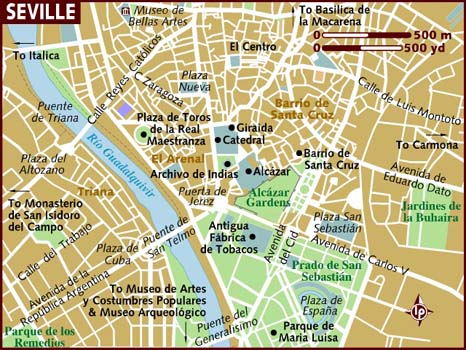
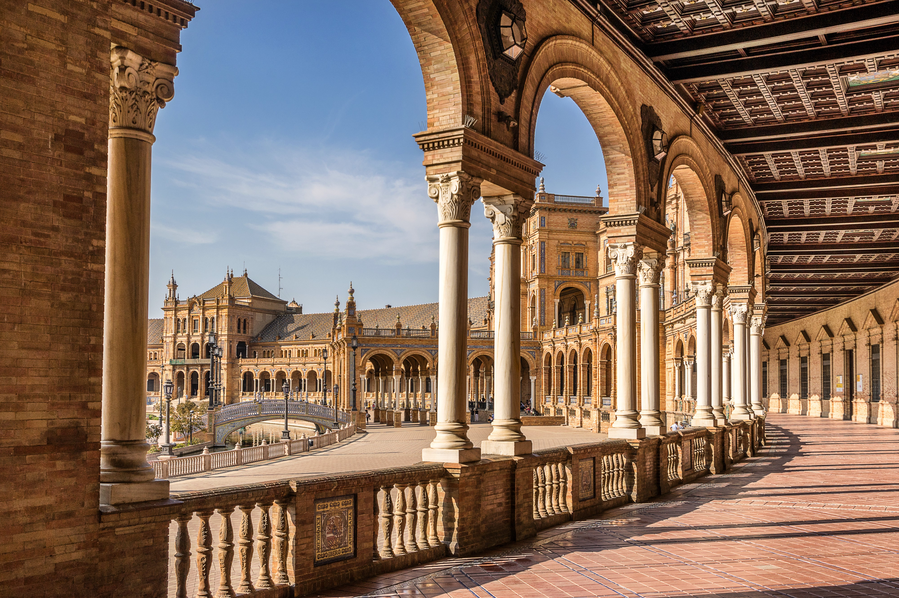

Местоположение

Севиля е провинция в югоизточна Испания, част от автономна област Андалусия. Граничи с провинциите Бадахос на север, Кордоба на изток, Малага и Кадис на юг и Уелва на запад. Административен център е град Севиля.
История
Историята на Севиля е много тясно свързана с река Гуадалкивир,
защото от най-далечни времена градът е бил речно пристанище и мост между
Атлантическия океан и вътрешността на Андалусия, без да забравяме, че Севиля винаги е била на кръстопътя между Североизтока и Запада на Иберийския полуостров. Дори ако се върнем толкова назад във времето до първото хилядолетие пр. н.е., районът на Севиля вече е
бил предопределен да се превърне в съвършеното място за търговско средище на долината на река Гуадалкивир. Първоначално Севиля възниква на място, където река Гуадалкивир не е била плавателна за корабите идващи от морето.
Забележителности
Фактът, че в различнипериоди от време Севиля е била под контрола на мюсюлманите,
стои в основата на това днес в града да бъдат видяни множество обекти-символ на мюсюлманската архитектура. Редом до готическите катедрали може да се видят пищни детайли на
мюсюлманската архитектура, оформящи интересен стил, носещ името Mudejar. Именно в такъв стил е построена и една от големите забележителности на Севиля - замъкът на Алказар -
майсторско съчетание от мавритански техники и католически символи, съвършен образец на мудехарската архитектура. Има и още няколко дестинации, които също заслужават да бъдат посетени.

- Катедралата на Севиля, Санта Мария де ла Седе, е най-голямата готическа катедрала в света и е обявена за световно наследство от ЮНЕСКО през 1987 г. Катедралата се намира в центъра на града и няма как да я сбъркате.
- Дворецът Алказар - това е пищен замък, построен през 60-те години на 14-ти век от крал Педро I Кастилски върху развалините на крепост от времето на маврите.
- Златната кула (Torre del Oro) - намира се в централната градска част и е разположена на брега на река Гуадалкивир. Наречена е златна, защото в миналото върхът й е бил покрит със злато.
- Площад Испания - Направен е специално за някакво испано-американско изложение през 1929 година. На площада има изградени мостчета и езерца и човек може да се разходи там с лодка.